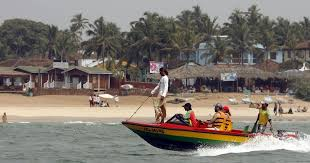

From launching a new platform that harnesses the power of nature in the fight against the climate crisis to raising critical funding to protect black rhinos in Namibia, together we've taken major strides in 2023.
WHEN OCEANS THRIVE, THE PLANET REGAINS ITS NATURAL STRENGTH AND FLOURISHES
Conservation highlights of 2023
From launching a new platform that harnesses the power of nature in the fight against the climate crisis to raising critical funding to protect black rhinos in Namibia, together we've taken major strides in 2023.
WHEN OCEANS THRIVE, THE PLANET REGAINS ITS NATURAL STRENGTH AND FLOURISHES
Healthy oceans and the marine species living in them provide natural at-scale solutions to climate adaptation and resilience—and they absorb vast amounts of carbon dioxide. Oceans fuel the water cycles that produce rain and freshwater and create oxygen. And oceans are foundational to spectacular ecosystems and biodiversity, including treasured marine wildlife such as whales, sharks, polar bears, and turtles

WHEN OCEANS THRIVE, PEOPLE THRIVE
Where ocean ecosystems are resilient and productive, so are coastal communities. Researchers looking at more than 100 studies to better understand the connection between marine conservation and human health found that most people in the world depend on ocean health for food, health, and economic benefits.

WHEN OCEANS THRIVE, SOCIETIES ARE PROSPEROUS
Oceans play a vital role in many of our shared faiths and cultures. They also play a critical role in our economies. Nature-based solutions
WHEN OCEANS THRIVE, PEOPLE THRIVE
Where ocean ecosystems are resilient and productive, so are coastal communities. Researchers looking at more than 100 studies to better understand the connection between marine conservation and human health found that most people in the world depend on ocean health for food, health, and economic benefits.
WHEN OCEANS THRIVE, SOCIETIES ARE PROSPEROUS
Oceans play a vital role in many of our shared faiths and cultures. They also play a critical role in our economies. Nature-based solutions protect billions of dollars in physical infrastructure and the value of key ocean assets is conservatively estimated to be at least $24 trillion. A rapidly growing ocean economy promises a new era of sustainable economic development as sectors including seafood production, coastal development, shipping, and renewable energy can revolutionize the well-being of communities and countries everywhere.

WHEN OCEANS THRIVE, THE WORLD IS MORE PEACEFUL
The ocean feeds billions of people, delivers hundreds of millions of jobs, and provides safety and security to millions of individuals and communities vulnerable to the threat of climate change and natural disasters. Unhealthy oceans further conflict, crime, and societal unrest. But healthy oceans provide an enabling environment for peaceful and well-functioning societies.
THE TOURISIM
Located at the southernmost coast of the Indian peninsula, Kanniyakumari Beach offers attractions that are highly unique. Here is where you can see the confluence of three major water bodies that in many ways define this uniqueness – the Bay of Bengal, the Indian Ocean and the Arabian Sea.
